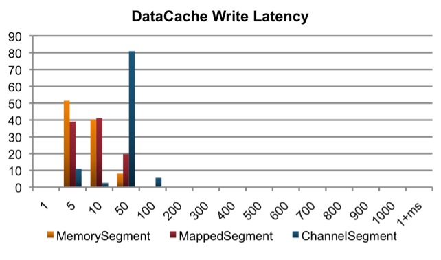

Krati
Krati is a simple persistent content data store with very low latency and high throughput. It is designed for easy integration with other services with little effort in tuning configuration, performance and JVM garbage collection. This software is published under the terms of the Apache Software License version 2.0, a copy of which has been included in the LICENSE file shipped with the Krati distribution.
Krati is a time measurement in Sanskrit and stands for 68,000th of one second. Such a time measurement provides an ideal quantification for read/write latency and throughput and also defines the performance goals of the Krati content data store.
Design Considerations:
- Data Model:
- Varying-length data array
- Key-value data store
- Multi-Reader and Single Writer
- Append-only writes
- Concurrent reads and writes
- Persistency:
- Write-ahead redo log
- Writes persisted to disk in batch
- Performance:
- Low read/write latency
- High read/write throughput
- Automatic data compaction
- Java-based:
- Java Nio-enabled
- Java GC friendly
Architectural Overview:
The conceptual architecture of Krati is composed of three layers. The top layer is the content data store service API, which includes array-like set/get methods and standard key-value store get/put/delete methods. The bottom layer provides Java NIO-based persistency to back up data segments, indexes, and meta data via disk files.
The layer in the middle manages data segments, data indexes, and write-ahead redo logic. Segment Manager is responsible for segment creation, recycle and compaction. Index Manager uses hash functions to map keys to memory-resident array indexes. It does automatic batch-based flushing to sync data, indexes, and meta data to disk files. Data Handler allows customization of data to put into segments.
Krati segments can be thought of pure data blocks backed by files on disk. Every segment contains a number of data elements. The index manager provides logic for retrieving indexes to data elements in a segment. Krati always keeps indexes in memory for better performance. Krati supports three types of segments:
- MemorySegement: Memory resident and designed for extremely fast reads and writes. It works for small data sets that fit into memory.
- MappedSegement: I/O page cache resident via Java/NIO mmap and designed for relatively fast reads and writes. It works for relatively large data sets that do not fit into memory.
- ChannelSegement: I/O page cache resident and designed for relatively slow reads and writes. It works for very large data sets that cannot fit into memory.
The following diagram shows the internal implementation of the Krati main class SimpleDataArray. Multiple readers can issue concurrent reads via DataArray get methods. There is one and only one writer, which does append-only writes to data segments via DataArray set methods. The writer periodically starts a compactor to perform segment compaction and reclaim wasted data space.
Getting Started:
It is the best to go over a few lines of sample code to become familiar with Krati.
You can obtain the Krati distribution with versions 0.3.4 or above.
The examples directory from the distribution contains a number of sample files such as KratiDataCache.java and KratiDataStore.java.
Performance Overview:
This section provides a quick glance of Krati performance. The performance figures were collected using the setup below:- Krati Configuration
- 1 Writer
- 4 Readers
- Data Size: 0.5~2 KB, Avg. 1 KB
- Batch Size: 10,000
- Segment Size: 256 MB
- Member Count: 5,000,000 (typical partition size)
- Test Machine
- Mac OS X Version: 10.5.8
- Processor: 2 x 2.26 GHz Quad-Core Intel Xeon
- Memory: 24 GB 1066 MHz DDR3
- Startup Disk: Macintosh HD
- Java 6
- Sun Hotspot JVM
- -server -Xmx16G
The Krati distribution has included a number of tests for collecting performance statistics.
If you have a Krati distribution with versions 0.3.4 and above, you can simply run
ant test.loggc -Dtests.to.run=TestDataCache
to collect read/write throughput and latency on your own computer.
If you want to evaluate DataCache with MappedSegment and ChannelSegment, you can run
ant test.loggc -Dtests.to.run=TestDataCacheMapped
and
ant test.loggc -Dtests.to.run=TestDataCacheChannel
respectively.
The write throughput is approximately 20~30 writes per millisecond for MemorySegment and roughly 10~20 writes per millisecond for MappedSegment and ChannelSegment. The persistency and recovery achieved via disk files and redo logs have an impact on write throughput.

The read throughput is approximately 1000~1200 writes per reader thread per millisecond for MemorySegment. It is an order of magnitude faster than throughput obtained using MappedSegment or ChannelSegment.
The ChannelSegment has the highest write latency. As shown in the figure below, approximately 80% of writes have a latency between 10 and 50 microseconds. The write latencies for MemorySegment and MappedSegment are approximately on the same level with the majority of writes finished between 1 and 10 microseconds.

The read latency for MemorySegment is under 1 microsecond. In contrast, over 95% of reads from ChannelSegment range between 10 and 50 microseconds. MappedSegment is in the middle.
For an in-depth comparison of Krati and BDB JE, please refer to A Thorough Look at Krati vs. BDB JE - A Comparison of Throughput, Latency and GC.